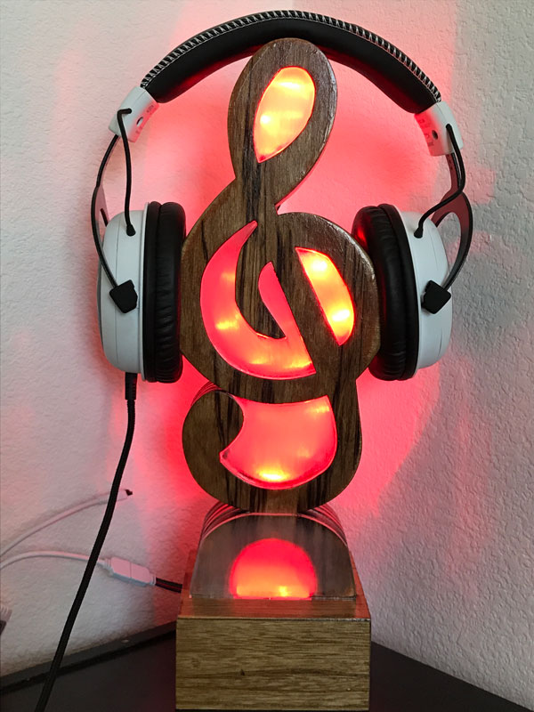
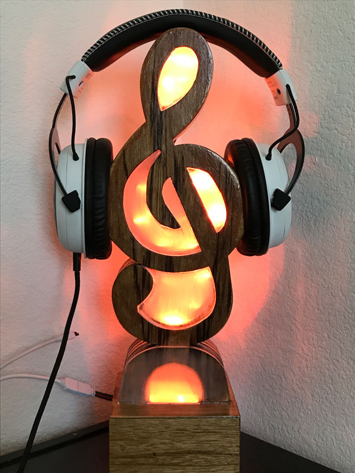
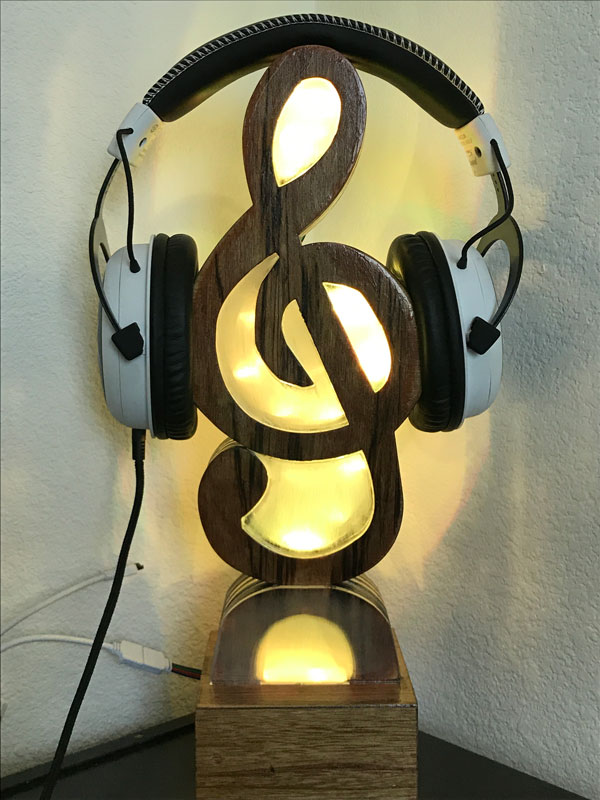
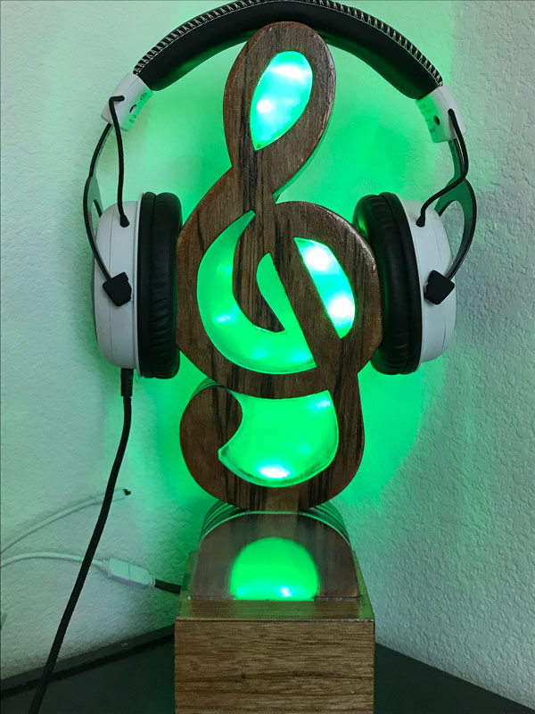
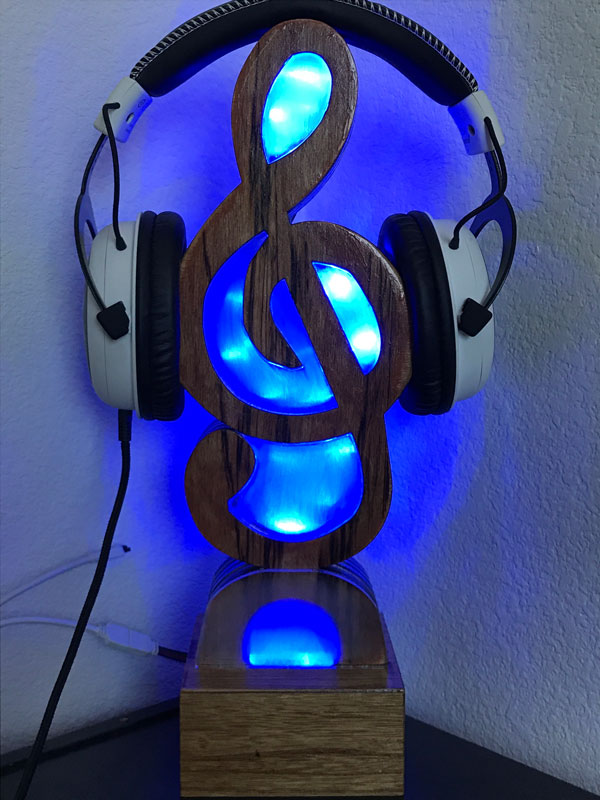
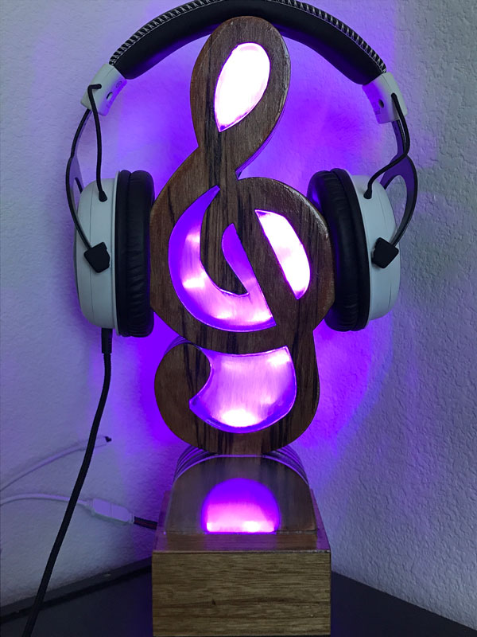
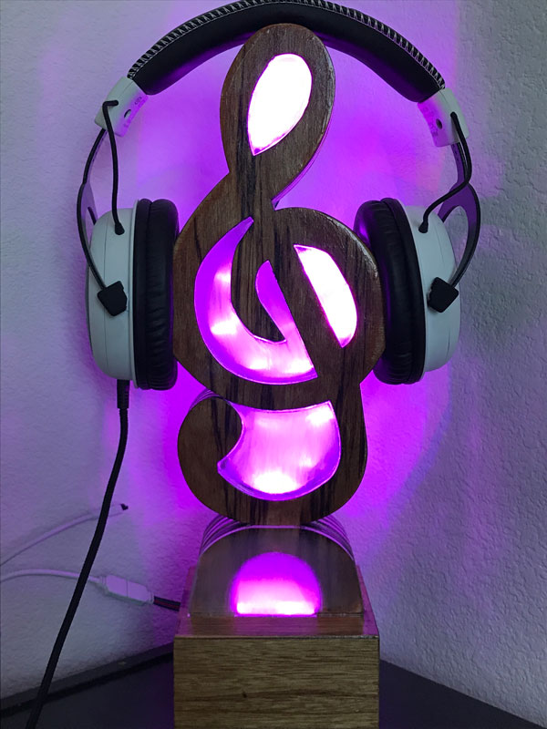
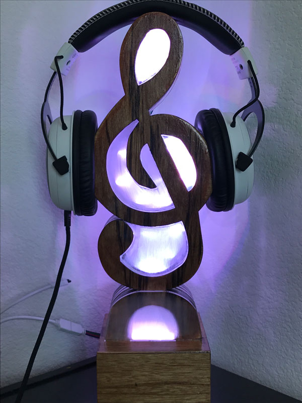
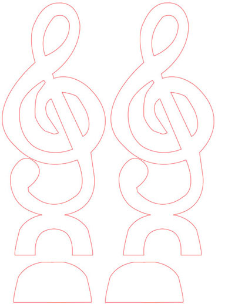
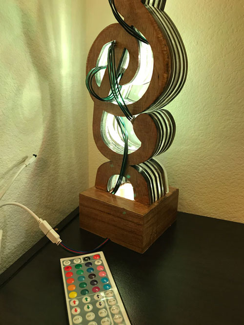

|
|
For this project, I wanted to make use of the CNC laser cutter to make a headset stand in the shape of a treble cleft. In a way, the design itself and its functionality plays on the concept of "play." First, the treble cleft is a common symbol seen in music. In my opinion, one could argue that music is a universal language; practically every culture has their own type of music that can be celebratory, joyful, sad, relaxing, etc. Its functionality as a headset stand also ties in with the concept of "play." I play a lot of computer games and listen to a lot of music, so it serves as a nice resting place for my headset. Also, because I listen to a lot of music, the design of the headset stand just fits with the headset as a device that plays sound. The process for creating this headset stand was rather simplistic. First I started with an AI file consisting of two designs: the treble cleft symbol itself and two cover panels for the lights.  Using the laser cutter, I cut out 2 pieces of .22" thick acrylic, 2 pieces of .125" thick acryclic, and seven pieces of .25" plywood. Next, I layered the pieces together starting from two layers of plywood, .125" acryclic, plywood, .22" acryclic, plywood, .22" acryclic, plywood, .125" acryclic, and finally two layers of wood for a total of eleven layers. Then, I superglued all the pieces together and sanded down the edges starting from 100 grit sandpaper, to 400 grit sandpaper. To ensure that my headset would not get ruined by the edges of the stand, I sanded the curves where my headset rested. After doing my best sanding the entired thing down, trying to make areas sit flush with one another, I bought a small, square-shaped box from Michaels. I removed the hinge from box and used my dremel to create a rectangular hole in the base relative to the size of the gap underneath my headset stand (this will become my base for my headset stand). After gluing the treble clef to the base, I coated the entire piece with 3 coats danish oil. Then, I coated the entired piece once more with 2 coats of polyurethane. After the polyurethane had set for a few days, I started to work on the lighting.  For the lighting, I used LED strips that came in increments of 5 (if I were to make another headset stand, I would use a strip that had LED's coming in increments of 3). Unfortunately, I did not calculate how the light would diffuse throughout the whole piece. At first, I thought about lighting the piece from underneath, however, the complex shape of the treble cleft did not provide enough material for the light to pass completely through. So, I decided to light the piece from each hole. Having lights that came in increments of 5 made it difficult to fit the lights into smaller holes; unfortunately, the strip would not light up if cut any shorter. After planning out how each strip attatched to one another, I soldered all the lights into one strip and stuck them into each respective hole using the tape backing already attatched to the lights. All the was left was to create a small notch in the base with my dremel so that the wire does not get squished when placed on a flat surface. The lights came with a remote controller that allows me to light the piece in a multitude of colors, 20 set colors to be exact. You can also change the brightness and select certain effects such as "flash," "fade," "quick," "slow," and you can program the lights to your liking. CNC PLay Project, H: 12.5in, W: 4.25in, D: 1.5in, Laser cut plywood and clear acrylic sheet, polyurethane, LED strip, 2017. |
|---|